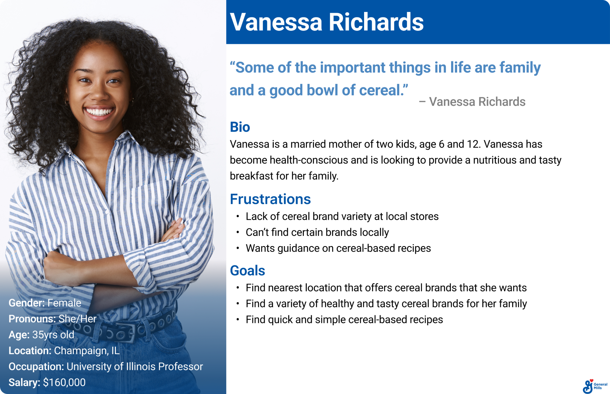

Research
| Original General Mills Page
To begin our research we looked at the original General Mills cereal product page.

| Mind Map
After analyzing the original page we began to research more about General Mills. We wanted to learn about their style guide, mission statement, demographics, history etc.
| Persona
From our research we created a proto-persona named Vanessa to help us empathize more with General Mills' customers.
| Empathy Map (Without Pains/Gains)